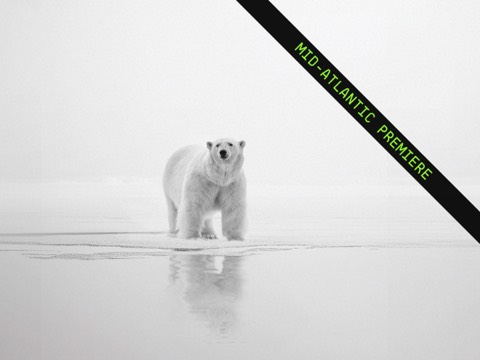

Panel · DX² · Double Exposure 2025
Against the Current: Breaking Through the Dominant Narrative
Friday, October 31, 2025 · 10:20 AM–11:30 AM · Johns Hopkins University Bloomberg Center, Fourth Floor, Link Room
How do filmmakers and reporters reframe stories so deeply woven into public consciousness that they rarely face real scrutiny? In this incisive panel discussion, the directors and journalists behind Magic & Monsters and Trade Secret reveal how their work challenged entrenched beliefs, uncovering what is overlooked or deliberately hidden. Together, they explore the creative, ethical, and practical challenges of confronting dominant narratives—perceptions so pervasive and protected by powerful interests that questioning them can provoke resistance or risk. From sourcing elusive material to navigating institutional pushback, the panelists illuminate the intricate process of bringing suppressed truths into view. Rather than offering neat resolutions, the conversation dwells in the uneasy terrain artists must traverse to disrupt the status quo, as well as the personal and professional repercussions that often fall on those unwilling to look away.
Recording
Films discussed
 Magic & MonstersNorah Shapiro2025 · 89 min
Magic & MonstersNorah Shapiro2025 · 89 min
Trade SecretAbraham Joffe2025 · 98 min
Sources
Related sessions
- 2025 · Thu Oct 30 · 1:00 PMPanel · DX²Fog of Falsehood: Disinformation, AI, and the Battle Over RealityGaia de Simoni, Eugene Jarecki, Ben Loeterman, Nick Quested, Kate Stonehill, Zach Toombs
- 2025 · Thu Oct 30 · 2:15 PMPanel · DX²Race in Real TimeAnurima Bhargava, Byron Hurt, Laura Dyan Kezman, William Howell, Natalie Bullock Brown
- 2025 · Fri Oct 31 · 11:30 AMPanelBetween Care and Truth: Ethical Dilemmas in Character-Driven DocumentaryPatricia Aufderheide, Hanna Lane Miller, Bridget Hunnicutt, Nick Price, Hanna Lane Miller
- 2025 · Fri Oct 31 · 3:20 PMConversationSubterfuge in Search of Truth: Mads Brügger in Conversation with Ted HopeMads Brügger, Ted Hope
- 2025 · Fri Oct 31 · 3:20pmPanel · DX²Subterfuge in Search of TruthMads Brügger, Ted Hope
- 2024 · Thu Nov 7 · 11:30 AMPanel · DX²Generative AI: Toward Best Practices in Documentary ProductionRachel Antell, Justine Bateman, Brandon Butler, Daniel Freed, Graham Sack
- 2024 · Thu Nov 7 · 1:30 PMPanel · DX²Cross Country: Unpacking Regionalism in Documentary FilmmakingAaron Asbury, Laura Deutch, Ryan Pearson, Ouida Washington, Nick Price
- 2024 · Fri Nov 8 · 10:45 AMPanel · DX²Personal Stories, Universal Impact: The Power of Investigative FilmmakingGerad Argeros, Debra Aroko, Erika Cohn, Emma D. Miller, Rajal Pitroda, Russell Leigh Sharman, Russell Leigh Sharman